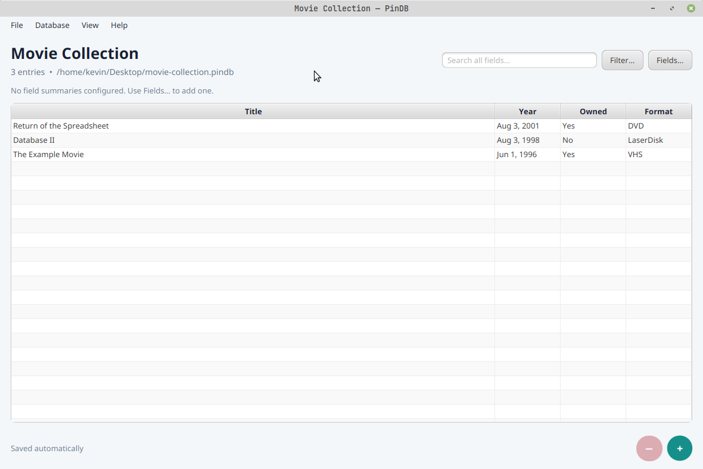
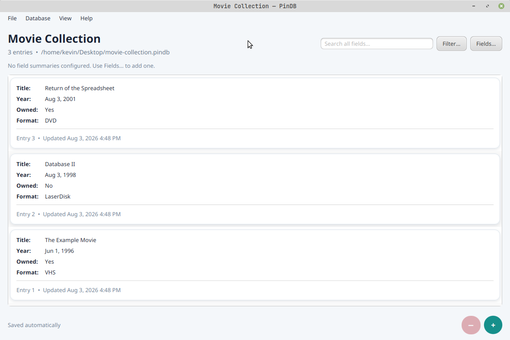
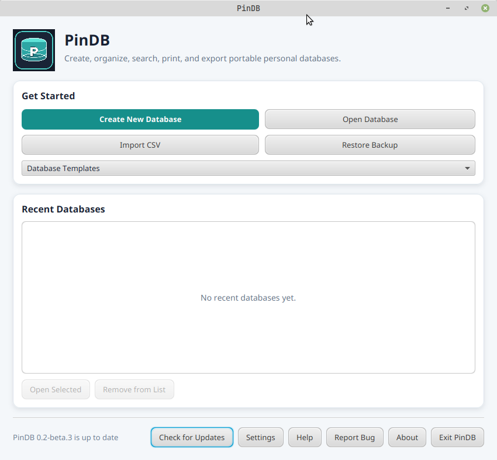
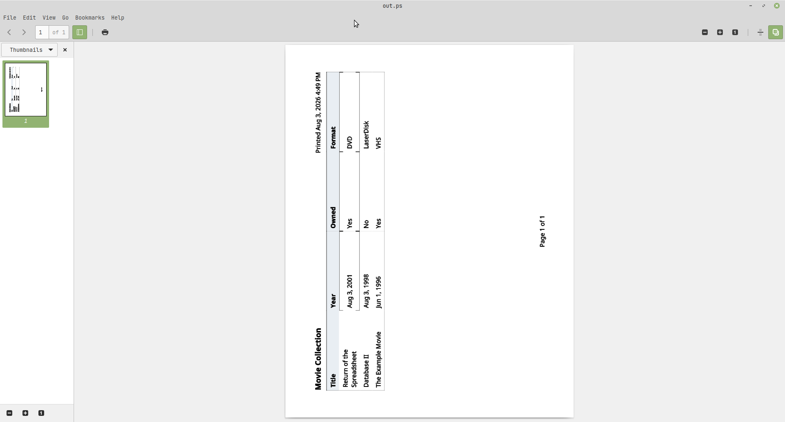

Build the database you need
Create text, multiline text, number, currency, date, date/time, yes/no, dropdown, and embedded-document fields with validation rules, defaults, limits, uniqueness, and summaries where appropriate.
PinDB is a desktop personal database for structured information, embedded documents, search, filtering, printing, and recovery—without a server or subscription.

PinDB sits between a spreadsheet and a full database system: flexible enough for real data, simple enough to use without SQL.
Create text, multiline text, number, currency, date, date/time, yes/no, dropdown, and embedded-document fields with validation rules, defaults, limits, uniqueness, and summaries where appropriate.
Search visible data, sort columns, build field-specific filters, switch between table and record views, import/export CSV data, and print filtered results.
Recently Deleted and internal logical snapshots give you day-to-day recovery tools, while embedded documents stay inside the database instead of depending on fragile external paths.
Native packages include PinDB's Java runtime. The current stable release is detected from GitHub automatically.
Looking up current GitHub release assets…
No server setup, database account, or separate runtime installation required.
Use the native package for your operating system and verify the published checksum.
Name your database, choose where it lives, and add the fields you want to track.
Enter data, attach documents, search, sort, filter, and switch views as needed.
Close the database normally, then copy the .pindb file anywhere you keep important backups.
PinDB uses a native x64 .exe installer. It installs per-user, can integrate with the Start Menu and desktop, and registers .pindb files.
Get-FileHash .\PinDB-<version>-windows-x64.exe -Algorithm SHA256 Get-Content .\PinDB-<version>-windows-x64.exe.sha256
Configuration lives under %APPDATA%\PinDB; state/cache uses %LOCALAPPDATA%\PinDB.
Use -macos-arm64.pkg for Apple Silicon and -macos-x64.pkg for Intel Macs.
shasum -a 256 -c PinDB-<version>-macos-arm64.pkg.sha256 # or shasum -a 256 -c PinDB-<version>-macos-x64.pkg.sha256
Application data uses native macOS locations under ~/Library/Application Support/PinDB and ~/Library/Caches/PinDB.
sha256sum -c downloaded-package.deb.sha256 sudo apt install ./pindb_*_amd64.deb
On supported traditional Debian-family systems, PinDB can verify and hand an update to its packaged privileged helper and the native package manager.
Traditional Fedora:
sha256sum -c downloaded-package.rpm.sha256 sudo dnf install ./pindb-*.x86_64.rpm
Fedora Atomic variants such as Silverblue or Kinoite require manual rpm-ostree layering and a reboot.
PinDB supports text, multiline text, numbers, currency, dates, date/time, yes/no, dropdowns, and embedded documents. Documents are stored in the database itself and can be previewed, saved as copies, printed where supported, or opened with the system application.
Import and export CSV data, calculate supported summaries such as sum/average/min/max/count, and print column or record layouts. Printing can target the currently searched or filtered rows.
PinDB uses the Gradle wrapper and Java 25. Native packaging also requires the platform's normal packaging tools.
git clone https://github.com/mccreeper1318/pindb.git cd pindb git switch dev
Open the repository for current build tasks and source.
PinDB keeps the workflow familiar: launch a database, define fields, add records, and work with your information in focused desktop windows.



PinDB is for people who need more structure than a spreadsheet but do not want to run or administer a database server.
Your databases remain local unless you choose to copy or sync them elsewhere.
A closed .pindb file can be copied, backed up, and moved like an ordinary file.
Common database tasks are exposed through a desktop interface instead of SQL.
Development, issues, releases, and source code are public on GitHub.